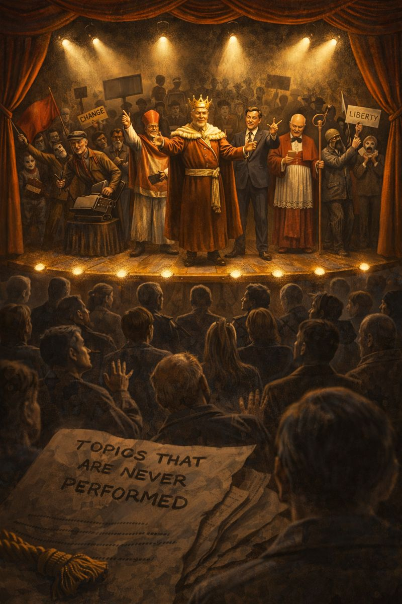

Article 13: The Grand Theater of Dissent – Actors, Extras, and the Unspoken Script
A friendly stroll behind the curtain of the global dissent scene: who's performing, what lines they deliver, and which topics mysteriously never make it to the spotlight.

Picture this: a grand old theater, velvet curtains, dramatic lighting, a full orchestra pit… but the audience is thinning. The show has been running for years — different actors rotate in, the script gets minor rewrites, yet the plot never really changes. Welcome to the Grand Theater of Dissent, the longest-running production in the alternative political world.
Everyone is welcome on stage. There are monologues, duets, even the occasional chorus line. The applause comes mostly from the same loyal fans in the front rows (and from likes, shares, and donations). But lately more and more people in the back are quietly heading for the exits, whispering: “Is this play ever going to end?”
Let's take a gentle, good-natured walk backstage and meet the cast. No villains here — just human beings playing roles in a theater that sometimes forgets it's supposed to lead somewhere.
Act I – The Leading Players
The Prophet of the Coming Collapse
Always dressed in black, voice grave, eyes wide with certainty. For fifteen years has been announcing the final countdown — sometimes to the month. Every new crisis is “the one.”
What they do: Post apocalyptic threads, sell books/webinars/precious metals, build a devoted following.
What they want: To be remembered as the one who saw it coming.
What they carefully avoid: Proposing a realistic, step-by-step governance model that could actually prevent or manage the collapse they keep predicting.
The Eternal Movement Leader
Charismatic, tireless, always organizing the next big national assembly — to re-elect the steering committee (himself included).
What they do: Rally thousands online, call for unity, denounce division.
What they want: To remain the central node of “the movement.”
What they carefully avoid: Any action that risks dispersing visibility or handing real decision power to ordinary citizens via sortition.
The Perpetual Candidate
Every electoral cycle: “This time it's different — we're building a real alternative!” New logo, new slogan, same promise.
What they do: Collect signatures, appear on small TV channels, raise crowdfunding.
What they want: A seat — regional, national, European — to “change the system from within.”
What they carefully avoid: Any serious critique of the electoral mechanism itself that might make their candidacy impossible or irrelevant. The theater needs elections to keep selling tickets.
The Sofa Philosopher & Commentator
Keyboard warrior supreme. 40 posts a day, razor-sharp takes on everything wrong with the world.
What they do: Amplify outrage, win arguments in threads, get invited on podcasts.
What they want: Recognition as “the voice of reason” in the alternative sphere.
What they carefully avoid: Organizing anything offline that requires showing up in person and risking real confrontation with power.
Act II – The Supporting Cast & Backstage Crew
Then there are the honorable extras: the single-issue warriors who fight passionately for one cause and view everyone else's fight as a distraction; the independent journalists surviving on subscriptions and therefore careful not to alienate too many donors; the anonymous benefactors who fund only “safe” dissent that never threatens the electoral game itself.
All of them are sincere. Most are good people trying to do something right in a broken world. The theater doesn't make them bad — it just gives them roles that keep the curtain up without ever changing the ending.
Act III – The Topics That Never Make It On Stage
Here's the curious part: certain subjects are almost invisible under the spotlights. Not because they're boring — quite the opposite. They're dangerous to the show itself.
- The legal fiction of electoral delegation: why voting does not (and cannot) legally transfer sovereignty.
- The structural nullity of acts based on fraudulent representation.
- The necessity of permanent, binding civic assemblies populated by sortition to restore real oversight and representation.
- The fact that no career politician — even the most “dissident” — can ever dismantle the electoral filter that produced them.
These topics don't get booed off stage. They simply never get booked. Because if seriously discussed and acted upon, the whole theater would have to close for renovation — and many actors would lose their dressing rooms.
Curtain Call
The Grand Theater of Dissent isn't evil. It's human. Entertaining, sometimes moving, often cathartic. But a play is not a revolution.
The audience is getting restless. More and more people are leaving during intermission, whispering: “Maybe it's time we stop applauding and start writing a new script.”
That new script doesn't need stars or eternal leads. It needs ordinary citizens, selected randomly like jurors, sitting in permanent civic assemblies with real binding power — not to replace representation, but to make it authentic for the first time.
No more monologues. No more waiting for the next season. Just people deliberating, deciding, and holding power to account.
The show can go on… but perhaps in a different theater.
One without permanent actors.
One where the citizens finally take the stage.
Ready to leave the old auditorium?
Join a Civic Assembly •
About You